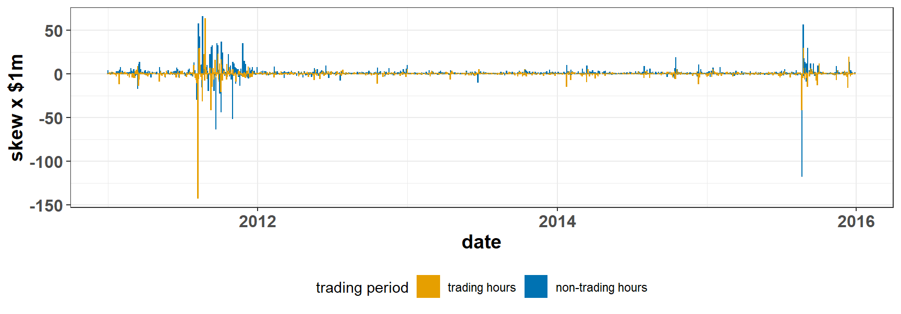

On the nature of jump risk premia
Piotr Orłowski
Paul Schneider
Fabio Trojani
HEC Montréal
USI
Swiss Finance Institute
Université de Genève
Swiss Finance Institute
Core results
Pricing of jump skew risk:
- Not present in daytime option trading
- large literature on jumps in high-frequency returns
- Present when trading options around non-trading periods
- but is it mispricing?
- Different from the pricing of variance risk
Model-free strategy that pays a functional of the path of jumps at settlement
- Dynamic option trading
- Fully non-parametric investigation of jump skew pricing
- How to interpret dynamic option trading
Motivation
Measurement of jump skew risk
Price and premium for jump skew risk
Empirical results: trading jump skew risk
Motivation – theoretical
Skewness and preferences
- Kraus and Litzenberger (1976), Arditti (1967)
- positive preference for skewness for reasonable utility functions
- with systematic skewness: low returns for positively skewed payoffs.
Jumps and asset pricing
- Barro (2006), Barro and Ursúa (2008)
- rare consumption disasters explain EPP
- Schreindorfer (2014)
- uncertainty shifts generate returns jumps, option smirk
- Segal, Shaliastovich, and Yaron (2015)
- differential impact of positive and negative uncertainty
- Tsai and Wachter (2016)
- systematic boom/disaster risk impacts cross-section
- Harvey and Siddique (2002), Schneider, Wagner, and Zechner (2016)
- conditional skewness explains cross-sectional anomalies.
Motivation – empirical
Tail risk \(\neq\) volatility risk
- Andersen, Todorov, and Fusari (2015), Andersen, Fusari, and Todorov (2017)
- Variation in negative jump risk not spanned by volatility
- Prices of OTM puts (relative to ATM) do not depend on diffusive volatility
- New factor required to describe variation in price of left tail risk.
- Bollerslev and Todorov (2014):
- \(\mathbb{P}\)-measure tail risks evolve over time.
Asymmetric pricing of tail risks
- Andersen, Fusari, and Todorov (2017):
- Prices of negative jump risk can be recovered from prices of deep OTM short-maturity puts.
- Andersen, Todorov, and Fusari (2015):
- The premium for negative jump risk is large, persistent
- Little to no premium for positive jump risk.
Motivation – empirical
Jump risk \(=\) priced risk?
- Kelly and Jiang (2014), Bollerslev, Li, and Todorov (2016):
- Jump risk (of S&P500) priced in cross-section of stock returns.
- \(\alpha = 5.4\%\) p.a. wrt FF3.
- Bollerslev, Li, and Todorov (2016):
- only jump component of S&P500 priced.
Other important facts
- Bollerslev, Todorov, and Xu (2015), Kelly and Jiang (2014):
- Price of jump risk predicts S&P500 returns.
Agenda
Is there a premium for the risk of jumps in high-frequency returns?
- examine continuous trading during market hours
- this replicates the dominant modeling setup
Where do option-implied jump premia come from?
- examine profits around non-trading periods
- no continuous option trading
- but continuous futures trading
- no more pure jump interpretation
- aversion to hedging restrictions or mispricing?
Motivation
Measurement of jump skew risk
Price and premium for jump skew risk
Empirical results: trading jumps kew risk
Measurement of jump skewness
Consider a semi-martingale forward price process (finite activity jumps):
\[ \frac{dF_t}{F_{t-}} = \mu_{t} dt + \sigma_{t-} dW_t + \int_{\mathbb{R}\setminus \{0\}}( e^x - 1 ) \, \nu_t(dx,dt) \]
Focus on skew of jumps in log-returns:
\[ \int_t^T \int_{\mathbb{R}\setminus \{0\}} \left( x^3 + O(x^4) \right) \, \nu_s(dx,ds) \]
Use divergence-based measures
- Family of realized variation measures defined in Schneider and Trojani (2019),
- Statistical inference for divergence in Khajavi (2017).
Few assumptions
- Trading results do not hinge on semi-martingale world,
- Only the “jump” interpretation does.
Measurement of jump skewness
Realized variance (divergence for \(p=0\)):
- realized divergence (\(p=0\)) \(\approx\) 1/2 realized variance (\(\color{red}{=}\) if no jumps) + \(f(p,\text{jump})\)
- consider VIX index; VIX2: price of Itakura and Saito (1968) divergence
- VIX2-based variance swap.
Realized jump skew:
- sensitivity of realized divergence to choice of \(p\): \(\frac{\partial D_p(r)}{\partial p}\).
Take log return:
\[ r_i := \log{F_{t_i}} - \log{F_{t_{i-1}}}. \]
Jump skew variation:
\[ S_{t,T} := \sum_{i=1}^N \left( \underbrace{e^{r_i}-1 - r_i}_{\text{realized divergence}} -\frac{r_i^2}{2} \right) \overset{\mathbb{P}}{\longrightarrow} \sum_{t \leq s \leq T} \frac{1}{6} \left(\Delta J_s\right)^3 + O(J_s)^4 \]
Motivation
Measurement of jump skew risk
Price and premium for jump skew risk
Empirical results: trading jumps kew risk
Central question: trading strategy
How to dynamically trade forwards and options so that their gross settlement payoff equals \(S_{t,T}\)?
Gross settlement payoff: before paid/received option premia
Like the floating leg of a variance swap
Trading strategy
Index option market:
- sparse maturities
- near continuum of strikes.
Non-linear trading:
Exposure to divergence of function of forward price \(\color{green}{\phi}(F_T)\) available through Breeden and Litzenberger (1978) and Carr and Madan (2001): \[ D_{\color{green}{\phi}}(F_T,F_t) := \color{green}{\phi}(F_T) \color{black}- \color{green}{\phi}(F_t) \color{black}- \color{green}{\phi}'(F_t)\color{black}(F_T- F_t) = \int_0^{\infty} \color{green}{\phi}''(K) \color{red}{O(F_T; K, F_t)} \color{black}dK \]
Existing literature: semi-static strategies
\[ D_{\phi}(F_T,F_t) + \sum_i \delta_i (F_T - F_i) \]
Replication of \(S_{t,T}\) not possible with semi-static strategies
There is no \(\phi\) and \(\{\delta\}_{i=1}^{N_T}\) such that \(S_{t,T} = D_{\phi}(F_T,F_t) + \sum_i \delta_i (F_T - F_i)\).
Trading strategy
Express \(S_{t,T}\) as sum of option payoffs between \(F_{t_i}\) and \(F_T\):
\[ S_{t,T}= \sum_{i=1}^N \left( e^{r_i}-1 - r_i -\frac{r_i^2}{2} \right) = \underbrace{\phi_s(F_T,F_{0})}_{\color{green}{\bigstar}} + \sum_i \underbrace{\gamma_{i}\phi_v(F_T,F_i)}_{\color{purple}{\bigstar}} + \underbrace{\delta_i (F_T - F_i)}_{\color{orange}{\bigstar}}. \]
\(\color{green}{\bigstar}\) at time \(t_0\) buy a skewness swap
\(\color{purple}{\bigstar}\) at time \(t_i > t_0\) trade \(\gamma_i\) variance swaps \(\color{red}//\) \(\color{orange}{\bigstar}\) at time \(t_i > t_0\) trade \(\delta_i\) forwards

Features of the trading strategy
Arbitrary trading frequency
- if options and underlying traded continuously
- jump interpretation at sufficiently high frequencies
Arbitrary trading horizon
- close positions appropriately, retain interpretation
Analytical convenience
- relatively easy to calculate moments in affine models
Features of the trading strategy
Arbitrary trading frequency
- if options and underlying traded continuously
- jump interpretation at sufficiently high frequencies
Arbitrary trading horizon
- close positions appropriately, retain interpretation
Analytical convenience
- relatively easy to calculate moments in affine models
- anyone interested?
- anyone interested?
Another question: interpretation
How to interpret the resulting jump skew premium?
\(\mathbb{E}^{\mathbb{P}}[S_{t,T}]\) : estimate from high-frequency data
\(\mathbb{E}^{\mathbb{Q}}[S_{t,T}]\) : we don’t know the future prices of options
Jump skew premium
Semi-static strategies (e.g. variance swaps):
- floating leg — realized variation measure \(\equiv\) fwd + option settlement,
- fixed leg — swap rate — \(\mathbb{E}^{\mathbb{Q}_T}_t[\phi(F_T) - \phi(F_t)]\).
Dynamic strategies:
- floating leg — as above,
- replicating leg — two components
- static skew swap rate (as if there was no extra hedging)
- weight integrated wrt \(\Delta\) SR , \(\int_t^T \color{orange} \gamma_s \color{black} d \color{blue}\mathbb{E}^{\mathbb{Q}_T}_s[\phi(F_T) - \phi(F_s)]\),
Interpreting the jump skew premium
With MGF of log-return \(\varphi_t(p,\tau- t) \equiv \mathbb{E}_t^{\mathbb{Q}}\left[ e^{p\log{F_{\tau}/F_t}} \right]\): \[ \mathbb{E}^{\mathbb{P}}_t[S_{t,T}] - \left[\underbrace{-\frac{1}{2}\varphi''_t(0,T - t) - \varphi'_t(0, T - t)}_{\color{green}{\bigstar}} - \underbrace{\int_t^{T} \color{orange}\log{\frac{F_s}{F_t}}\color{black} d \color{blue} \varphi'_s(0,T - s)}_{\color{purple}{\bigstar}}\right] \]
Hedging exposure to jump skewness exposes trader to volatility price drivers.
Interpreting the jump skew premium
\[ \mathbb{E}^{\mathbb{P}}_t[S_{t,T}] - \left[\underbrace{-\frac{1}{2}\varphi''_t(0,T - t) - \varphi'_t(0, T - t)}_{\color{green}{\bigstar}} - \underbrace{\int_t^{T} \color{orange} \log{\frac{F_s}{F_t}}\color{black} d \color{blue}\varphi'_s(0,T - s)}_{\color{purple}{\bigstar}}\right] \]
\(\color{purple}{\bigstar}\) \(\color{blue} -\varphi'_s(0,T - s)\) — price of variance swap
\(\color{purple}{\bigstar}\) \(\color{orange} \log{{F_s}/{F_t}}\) — position in variance swap.
If we could trade forwards on VS: this term would have \(\mathbb{Q}_T\)-expectation 0.
But we can’t. Option rebalancing exposes investors to state variable risk.
However, reasonable definition of premium
Consider Merton (1976) -type models
- Theoretical premium: \(\mathbb{E}^{\mathbb{P}}[S_{t,T}] - \mathbb{E}^{\mathbb{Q}}[S_{t,T}] = \lambda (T-t) \color{blue} \mathbb{E}^{\mathbb{Q}}[J^3]\)
- Discrepancy between tradable and theoretical premium depends on size of VRP:
\[ (T-t)^2 \mathbb{E}^{\mathbb{Q}}[d \ln F_s]\left(\mathbb{E}^{\mathbb{\color{red}P}}[d \ln F_s] - \mathbb{E}^{\mathbb{\color{blue}Q}}[d \ln F_s] \right) \]
Motivation
Measurement of jump skew risk
Price and premium for jump skew risk
Empirical results: trading jump skew risk
CBOE SPX Weeklys
Weeklys:
- \(> 1/3\) of open interest @ CBOE
- Sufficient trading activity since 2011
- Quotes are 99.7% of the data
Profits from trading return skew
During trading hours and around non-trading periods
- Lower profits during trading hours
- Profits over non-trading periods higher in turbulent markets
- 2011: US debt downgrade / sovereign EU crisis
- 2015: mini flash-crash in August

Profits from trading return skew
Magnitudes:
- when you calculate VRP, it’s dollars for variance of return
- skew payoff measures dollars per skewness or return
- rescale values by \(10^6\) for legibility.
- margin requirements are here!
| transaction cost | mean | mean CI left | mean CI right |
|---|---|---|---|
| daytime trading profits | |||
| no | -0.13 | -0.33 | 0.13 |
| yes | -0.97 | -1.35 | -0.46 |
| overnight trading profits | |||
| no | 0.90 | 0.33 | 1.35 |
| yes | 0.49 | 0.03 | 0.82 |
| weekend trading profits | |||
| no | 2.04 | 0.54 | 3.34 |
| yes | 0.95 | -0.10 | 2.12 |
First conclusions
- No compensation for jump skew risk in continuous trading,
- Positive premium for holding skew positions over non-trading periods
- Same effect for shorting variance
Further questions
Long skew vs short variance trades
- Both strategies short put options
- Skew shorts more OTM puts
- Are deeper OTM options sufficiently different to bring about a different risk exposure?
Known risk factors
- To what extent can we explain these profits with standard factors?
- Tradable quantities, require \(\alpha=0\) in TS regression
- CAPM and Intermediary factor
- Supply/demand models (Gârleanu, Pedersen, and Poteshman (2009)) give intermediaries a particular role
- Important in empirical studies (He, Kelly, and Manela (2017))
Mispricing vs risk
- Is this strategy a good hedge of return skew?
- Are premia predictable by measures of return variation?
Spanning by known risk factors
Regress skew trading profits \(s_t\) across non-trading periods on:
- contemporary market return \(r_{mt}\),
- contemporary return on the primary dealer (intermediary) portfolio \(r_{dt}\),
- contemporary variance profit \(v_t\).
\[ s_t = \color{Maroon}\alpha\color{black} + \beta_m r_{mt} + \beta_d r_{dt} + \beta_v v_t + \eta_t \]
Interpretation
- all three proposed factors are tradable,
- if \(\color{Maroon}\alpha\color{black} = 0\), \(s_t\) profits are explained by known systematic factors.
Spanning by known risk factors: raw profits
| ON | ON | ON | WKND | WKND | WKND | |
|---|---|---|---|---|---|---|
| Predictors | Estimates | Estimates | Estimates | Estimates | Estimates | Estimates |
| \(\alpha\) | 0.67 *** | 0.62 *** | 0.37 *** | 2.44 *** | 2.55 *** | 0.24 |
| \(r_{mt}\) | 4.79 *** | 3.17 | 2.08 | 7.13 *** | 3.91 *** | 0.88 |
| \(r_{dt}\) | 1.40 | 0.27 | 2.49 ** | 1.80 * | ||
| \(v_t\) | 0.04 *** | 0.05 *** | ||||
| Observations | 730 | 730 | 730 | 263 | 263 | 263 |
| R2 / R2 adjusted | 0.252 / 0.251 | 0.268 / 0.266 | 0.602 / 0.600 | 0.377 / 0.375 | 0.403 / 0.399 | 0.799 / 0.797 |
|
||||||
- Exposure to market risk explains ~30% of after-hours skew profits,
- Positive association between profits from shorting variance and skew profits,
- But profits from shorting variance subsumed by the market return in ON trading,
- Residual \(\color{Maroon}\alpha\) in ON but not WKND regressions with profits from shorting variance
- Little space for the intermediary risk factor.
Spanning by known risk factors: transaction costs
| ON | ON | ON | WKND | WKND | WKND | |
|---|---|---|---|---|---|---|
| Predictors | Estimates | Estimates | Estimates | Estimates | Estimates | Estimates |
| \(\alpha\) | 0.26 | 0.22 | -0.04 | 1.44 *** | 1.54 *** | -0.42 |
| \(r_{mt}\) | 4.93 *** | 3.45 * | 2.35 | 7.48 *** | 4.38 *** | 1.82 ** |
| \(r_{dt}\) | 1.28 | 0.14 | 2.39 ** | 1.81 ** | ||
| \(v_t\) | 0.04 *** | 0.04 *** | ||||
| Observations | 730 | 730 | 730 | 263 | 263 | 263 |
| R2 / R2 adjusted | 0.279 / 0.278 | 0.293 / 0.291 | 0.648 / 0.647 | 0.447 / 0.445 | 0.473 / 0.469 | 0.780 / 0.777 |
|
||||||
- Even modest transaction costs erase the risk-adjusted profitability of ON trading,
- In WKND trading, no profiability beyond exposure to standard factors,
- Real extent of transaction costs hard to judge, lower than posted spreads (Muravyev and Pearson (2015)),
- We observe many transactions within the spread.
Option mispricing vs risk-based explanations?
Puzzling patterns in option returns
- Options (puts!) are very expensive, deliver strongly negative returns
- zero / positive returns during market hours
- negative returns when held over non-trading periods
Quantity vs price of risk explanations?
- It’s not quantity
- Returns in non-trading periods have lower variance than during market hours
- We see NT period returns are less risky by all imaginable measures
- It’s not price
- No patterns in returns on options with different features (and thus exposures)
- All findings in Jones and Shemesh (2018), Muravyev and Ni (2019)
Our evidence
- Mispricing explanation bounded by the extent to which CAPM explains profits,
- The skew strategy is a good hedge of return skewness,
- The skew profits are predictable with return variation measures.
Hedging overnight return skew
Payoff design
- The settlement of the options and forwards pays exactly return skew
Empirically
- The option premia component is much larger than settlement
- Is it correlated with return skew?
- Is it correlated with return skew?
| horizon | quantity | cor |
|---|---|---|
| overnight | profit | 0.5451870 |
| overnight | profit_long | 0.5368903 |
| weekend | profit | 0.7588680 |
| weekend | profit_long | 0.8395925 |
Predicting overnight skew profits
Temporal variation
- Average profitability of after-hours skew profits varies over time
- it’s higher following days with high volatility and negative returns
| skew\(_{\text{night}}\) | variance\(_{\text{night}}\) | |
|---|---|---|
| Predictors | Estimates | Estimates |
| intercept | -0.09 *** | -0.04 |
| wknd | 0.16 * | 0.28 *** |
| \(r_{m,\text{day}}^3\) | -0.20 *** | -0.13 *** |
| \(BV_{\text{day}}\) | 0.34 *** | 0.19 *** |
| \((RV - BV)_{\text{day}}\) | 0.09 ** | 0.10 ** |
| Observations | 997 | 997 |
| R2 / R2 adjusted | 0.199 / 0.196 | 0.093 / 0.090 |
|
||
Summary
First model-free strategy that pays a functional of the path of jumps at settlement
- Dynamic option trading
- Fully non-parametric investigation of jump skew pricing
- Disaggregation of results over arbitrary time periods.d
Pricing of jump skew risk:
- Not present in daytime option trading
- Present in overnight option trading
- Persistent.
Conclusions
Compensation for holding downside tail risk in overnight periods
- hedging frictions due to illiqudity?
- who is exposed (broker-dealers)?
No evidence about daytime jump compensation
- high variance of estimates
- small significant profits in robust analysis.
Spanning of variance profits
| ON | ON | WKND | WKND | |
|---|---|---|---|---|
| Predictors | Estimates | Estimates | Estimates | Estimates |
| \(\alpha\) | 7.94 * | 6.94 * | 46.95 *** | 47.55 *** |
| \(r_{mt}\) | 64.53 *** | 29.36 | 80.52 *** | 62.19 ** |
| \(r_{dt}\) | 30.53 * | 14.16 | ||
| Observations | 730 | 730 | 263 | 263 |
| R2 / R2 adjusted | 0.155 / 0.153 | 0.180 / 0.177 | 0.222 / 0.219 | 0.226 / 0.220 |
|
||||
References
Andersen, TorbenG., Nicola Fusari, and Viktor Todorov. 2017. “Short-Term Market Risks Implied by Weekly Options.” The Journal of Finance 72 (3): 1335–86. https://doi.org/10.1111/jofi.12486.
Andersen, Torben G., Viktor Todorov, and Nicola Fusari. 2015. “The risk premia embedded in index options.” Journal of Financial Economics 117 (3): 558–84. https://doi.org/http://dx.doi.org/10.1016/j.jfineco.2015.06.005.
Arditti, Fred D. 1967. “RISK AND THE REQUIRED RETURN ON EQUITY.” The Journal of Finance 22 (1): 19–36. https://doi.org/10.1111/j.1540-6261.1967.tb01651.x.
Barro, Robert J. 2006. “Rare Disasters and Asset Markets in the Twentieth Century.” The Quarterly Journal of Economics 121 (3): pp. 823–66.
Barro, Robert J, and Jose F Ursúa. 2008. “Macroeconomic Crises since 1870.” Brookings Papers on Economic Activity 39 (1 (Spring): 255–350. https://ideas.repec.org/a/bin/bpeajo/v39y2008i2008-01p255-350.html.
Bollerslev, Tim, Sophia Zhengzi Li, and Viktor Todorov. 2016. “Roughing up beta: Continuous versus discontinuous betas and the cross section of expected stock returns.” Journal of Financial Economics 120 (3): 464–90. https://doi.org/10.1016/j.jfineco.2016.02.001.
Bollerslev, Tim, and Viktor Todorov. 2014. “Time-varying jump tails.” Journal of Econometrics 183 (2): 168–80. https://doi.org/http://dx.doi.org/10.1016/j.jeconom.2014.05.007.
Bollerslev, Tim, Viktor Todorov, and Lai Xu. 2015. “Tail risk premia and return predictability.” Journal of Financial Economics 118 (1): 113–34.
Breeden, Douglas T, and Robert H Litzenberger. 1978. “Prices of State-contingent Claims Implicit in Option Prices.” The Journal of Bussiness 51 (4): 621–51.
Carr, P., and D. Madan. 2001. “Optimal Positioning in Derivative Securities.” Quantitative Finance 1 (1): 19–37. https://doi.org/10.1080/713665549.
Gârleanu, Nicolae, Lasse Heje Pedersen, and Allen M. Poteshman. 2009. “Demand-Based Option Pricing.” Review of Financial Studies 22 (10): 4259–99. https://doi.org/10.1093/rfs/hhp005.
Harvey, Campbell R, and Akhtar Siddique. 2002. “Conditional Skewness in Asset Pricing Tests.” The Journal of Finance 55 (3): 1263–95. https://doi.org/10.1111/0022-1082.00247.
He, Zhiguo, Bryan Kelly, and Asaf Manela. 2017. “Intermediary Asset Pricing: New Evidence from Many Asset Classes.” Journal of Financial Economics 126 (1): 1–35. https://doi.org/10.1016/j.jfineco.2017.08.002.
Itakura, F, and S Saito. 1968. “Analysis synthesis telephony based on the maximum likelihood method.” In Proceedings of the 6th International Congress on Acoustics, 17:C17–C20. IEEE.
Jones, Christopher S., and Joshua Shemesh. 2018. “Option Mispricing around Nontrading Periods.” Journal of Finance. https://doi.org/10.1111/jofi.12603.
Kelly, Bryan, and Hao Jiang. 2014. “Tail risk and asset prices.” Review of Financial Studies 27 (10): 2841–71. https://doi.org/10.1093/rfs/hhu039.
Khajavi, Ali Noori. 2017. “The econometrics of realized divergence.” PhD thesis, Università Bocconi.
Kraus, Alan, and Robert H Litzenberger. 1976. “Skewness Preference and the Valuation of Risk Assets.” Journal of Finance 31 (4): 1085–1100.
Merton, Robert C. 1976. “Option pricing when underlying stock returns are discontinuous.” Journal of Financial Economics 3 (1-2): 125–44. https://doi.org/10.1016/0304-405X(76)90022-2.
Muravyev, Dmitriy, and Xuechuan (Charles) Ni. 2019. “Why do option returns change sign from day to night?” SSRN Scholarly Paper. Journal of Financial Economics, no. ID 2820264 (September). https://doi.org/10.1016/j.jfineco.2018.12.006.
Muravyev, Dmitriy, and Neil D. Pearson. 2015. “Option Trading Costs Are Lower than You Think.” SSRN Electronic Journal. https://doi.org/10.2139/ssrn.2580548.
Schneider, Paul, and Fabio Trojani. 2019. “Divergence and the Price of Uncertainty.” Journal of Financial Econometrics 17 (3): 341–96. https://doi.org/10.1093/jjfinec/nby021.
Schneider, Paul, Christian Wagner, and Josef Zechner. 2016. “Low Risk Anomalies?” SSRN Electronic Journal. https://doi.org/10.2139/ssrn.2858933.
Schreindorfer, David. 2014. “Tails, Fears, and Equilibrium Option Prices.” Available at SSRN: https://ssrn.com/abstract=2358157.
Segal, Gill, Ivan Shaliastovich, and Amir Yaron. 2015. “Good and bad uncertainty: Macroeconomic and financial market implications.” Journal of Financial Economics 117 (2): 369–97.
Tsai, Jerry, and Jessica A. Wachter. 2016. “Rare Booms and Disasters in a Multisector Endowment Economy.” In Review of Financial Studies, 29:1113–69. 5. https://doi.org/10.1093/rfs/hhv074.